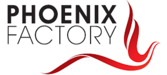
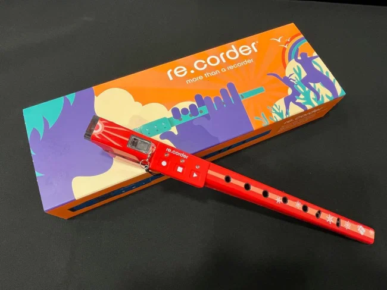
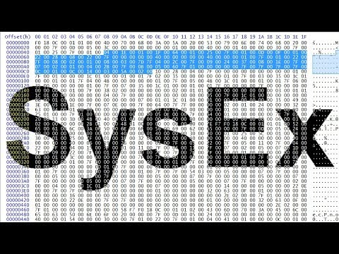
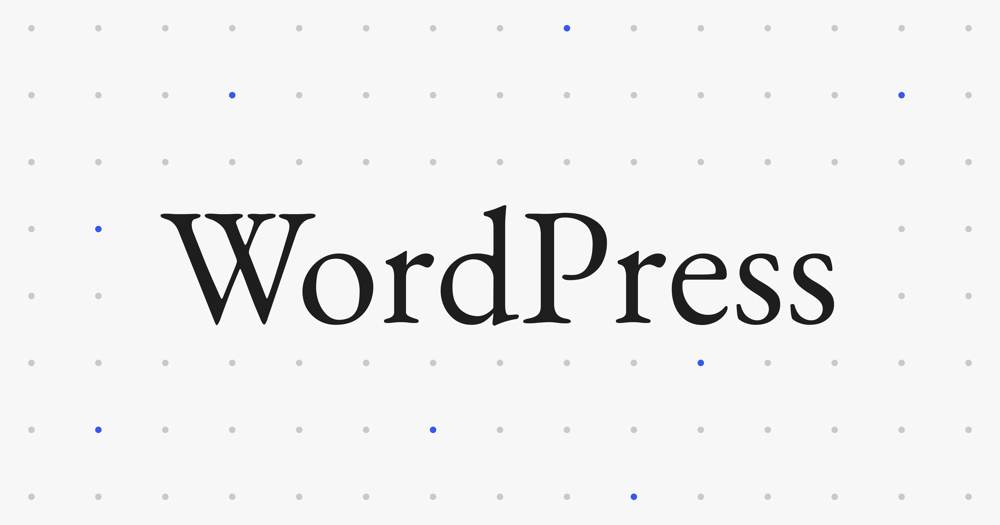
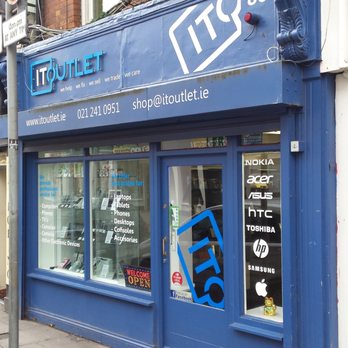
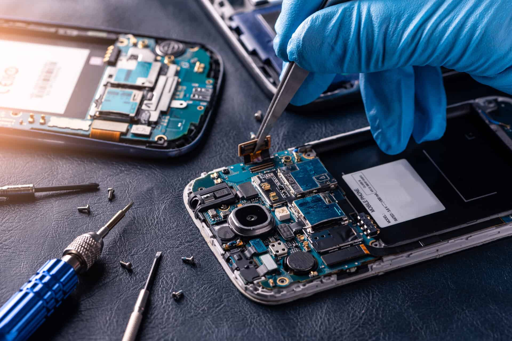

Inizialmente, dato il fatto che sarei dovuto andare in Erasmus, non si era
riusciti a trovare un'azienda che potesse ospitarmi per il FSL Dopo aver parlato a lungo con il
prof. Romagnoli e aver contattato diverse aziende, mi è stato comunicato, all'ultimo momento, che
un'azienda aveva deciso di accogliermi per svolgere il FSL.
All'inizio mi era stato detto che l'azienda produceva lavatrici, informazione che poi si è rivelata
solo parzialmente vera. Uno dei loro prodotti, infatti, è una scheda che può essere inserita in
vecchi modelli di lavatrici per eseguire varie funzioni diagnostiche.


Il primo giorno ho parlato con il mio tutor, Andrea Quintabà, che mi ha spiegato il funzionamento dell'azienda e mi ha mostrato i prodotti e i vari settori in cui opera. In quell'occasione ho scoperto che sviluppano prodotti hardware, spesso accompagnati da embedded software, per molti tipi di applicazioni. Inoltre, mi sono stati presentati alcuni strumenti MIDI sviluppati da loro attraverso Artinoise, la branca dell'azienda dedicata agli strumenti musicali, come re.corder e Zefiro.
Dopo aver conosciuto alcune delle persone che lavorano in azienda, mi è stato
assegnato il compito di sviluppare un software in grado di comunicare con Zefiro tramite il
protocollo MIDI SysEx. Ho realizzato il software in tempi piuttosto rapidi e, di conseguenza, mi
sono stati affidati altri esercizi, tra cui la realizzazione di un'applicazione simile che potesse
essere eseguita su diversi sistemi operativi utilizzando Flutter.
Successivamente sono stato assegnato al front-end. In collaborazione con un altro lavoratore, ho
contribuito allo sviluppo del nuovo sito web dell'azienda. Con questo si è concluso il primo periodo
di FSL.


Una volta tornato in Italia, ho ripreso subito il lavoro per completare il secondo periodo di FSL. Appena rientrato in azienda, ho continuato a lavorare sul sito di Artinoise, quasi sempre in autonomia, e in seguito ho sviluppato una semplice web app utilizzando React.
Tra i due periodi di FSL ho partecipato a un Erasmus in Irlanda. Ho trascorso un mese tra Cork, dove lavoravo, e Cobh, dove ero ospitato da una famiglia.

Durante l'esperienza ho lavorato presso IT Outlet, un negozio specializzato
nella riparazione di computer, tablet, telefoni e altri dispositivi elettronici. Nonostante alcune
difficoltà iniziali, mi sono trovato bene anche in questo contesto, sia dal punto di vista umano che
tecnico. Ho lavorato principalmente al front desk, occupandomi del contatto diretto con i
clienti.
Lavorare così "esposto" al pubblico mi ha permesso di uscire un po' dalla mia comfort-zone e ha dato
vita a molti incontri inaspettati.
Nel corso del lavoro ho notato alcune inefficienze nel sistema utilizzato per la
creazione dei ticket di riparazione. Con l'autorizzazione del tutor, ho sviluppato un semplice
software che permetteva di gestire in modo semi-automatico la creazione dei ticket, riducendo i
tempi necessari per completare l'operazione.
Il software ha attirato l'interesse di un altro negozio, presso il quale mi sono poi recato per
sviluppare un programma su misura, adattato alle loro specifiche esigenze.

Nel tempo libero, insieme al gruppo di studenti Erasmus presenti a Cork, ho visitato diverse attrazioni turistiche, tra cui la prigione di Spike Island, l'università di Cork e la città di Dublino.